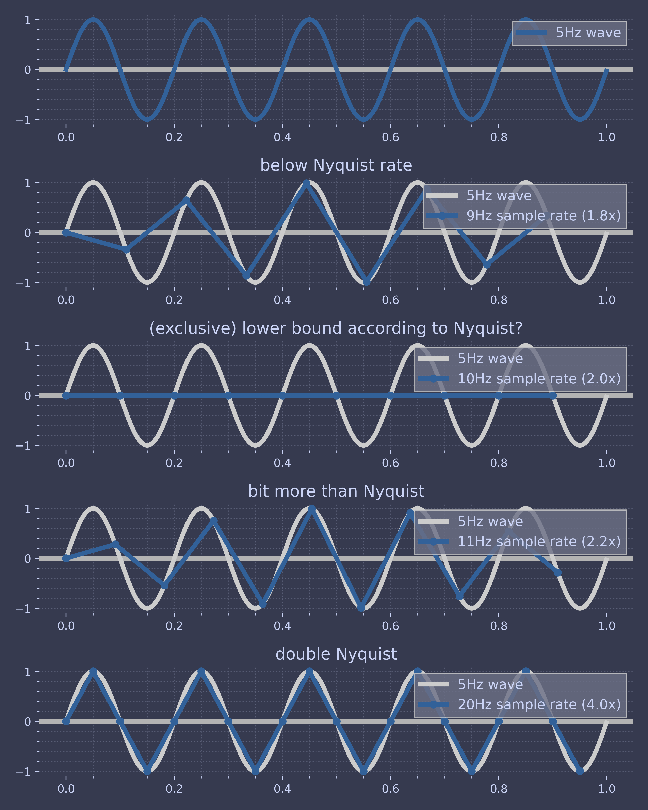

Code for Digital Image Processing Mathematical Fundamentals
Table of Contents
These are the code snippets used in Mathematical Fundamentals part of Digital Image Processing.
Introduction
The following code uses the standard matplotlib along with the custom ChalcedonPy which is detailed in its source code here.
The code is used primarily in the following code as a means to save figures for use in slides.
import matplotlib.pyplot as plt import ChalcedonPy as cp # Initialise ChalcedonPy cp.init(save_path="Mathematical-Fundamentals", display_mode="web")
Introduction
The following code covers the topic of mathematical fundamentals, which includes some examples on:
- convolution,
- fourier transform,
- spectral leakage,
- information theory.
Exercise: Convolution 1D
The following is the solution to the 1D Convolution question given in the lecture
import numpy as np def convolve_1d(signal, kernel): kernel = kernel[::-1] k = len(kernel) s = len(signal) signal = [0]*(k-1)+signal+[0]*(k-1) n = s+(k-1) res = [] for i in range(s+k-1): res.append(np.dot(signal[i:(i+k)], kernel)) return res
Now the function is defined, it is a matter of entering the two arrays and printing the function.
A = [1,1,2,2,1] B = [1,1,1,3] print(convolve_1d(A, B))
[1, 2, 4, 8, 8, 9, 7, 3]
Shannon Nyquist Sampling Theorem
Below is an unused code which showcases the practical limitation of the Shannon-Nyquist theorem.
import numpy as np from matplotlib import pyplot as plt wave_freq = 5 domain = 1 sample_rates = ( (wave_freq * 2 - 1, 'below Nyquist rate'), (wave_freq * 2, '(exclusive) lower bound according to Nyquist?'), (wave_freq * 2 + 1, 'bit more than Nyquist'), (wave_freq * 4, 'double Nyquist'), ) n_plots = len(sample_rates) + 1 fig = plt.figure(figsize=(8, 10)) ax = fig.add_subplot(n_plots, 1, 1) time = np.linspace(0, domain, 1000, endpoint=False) # take enough samples to make a seemingly perfect sine wave hi_res = np.sin(2 * np.pi * wave_freq * time) ax.axhline(color="0.7") ax.plot(time, hi_res, label=f'{wave_freq}Hz wave') ax.legend(loc=1) ylim = ax.get_ylim() for i, (sample_rate, title) in enumerate(sample_rates): ax = fig.add_subplot(n_plots, 1, i+2) t = np.linspace(0, domain, sample_rate, endpoint=False) samples = np.sin((2 * np.pi * wave_freq) * t) ax.axhline(color="0.7") ax.plot(time, hi_res, label=f'{wave_freq}Hz wave', color='0.8') # show what we're aiming for ax.plot(t, samples, marker='o', label=f'{sample_rate}Hz sample rate ({sample_rate/wave_freq}x)') ax.set_ylim(*ylim) ax.legend(loc=1) ax.set_title(title) cp.store_fig("shannon-nyquist",close=True)

Spectral Leakage
Let’s take a look at an example using a simple sine wave. First import the necessary modules.
import numpy as np import matplotlib.pyplot as plt import scipy.stats as st import scipy.signal as sig
Let’s define a sine function on a time domain, such that
the sine function completes  , integer cycles, i.e.,
no cycles are cut-off within the domain.
, integer cycles, i.e.,
no cycles are cut-off within the domain.
import numpy as np T = 8 * np.pi # length of time domain t = np.arange(0, T + 0.05 * np.pi, 0.05 * np.pi) freq = np.arange(0, int(len(t) / 2.0) + 1) / len(t) y_sin = np.sin(t) # define the sin function
Now, we can define and plot our sine function.
plt.plot(t,y_sin) plt.xlabel("Data Points") plt.ylabel("Amplitude") plt.title("Sine Wave") cp.store_fig("fft-spectral-leak-sine", close=True)

Here, we have 4 complete cycles of our sine wave. Now, let’s compute the discrete power spectrum of this sine wave.
# Do simple fft of the signal yfft1_raw = np.fft.fft(y_sin) yfft1 = yfft1_raw/len(y_sin) # compute variance as a function of frequency (spectral power) PSD = 2*np.abs(yfft1[0:int(len(t)/2.0+1)])**2
And time for plotting out FFT results
plt.bar(freq, PSD, width=0.0025) plt.xlabel('Frequency (cycles per time step)') plt.ylabel('Normalized Power') plt.title("D-PSD for Un-windowed Sine Wave") plt.xlim(0,0.1) cp.store_fig("fft-spectral-leak-unwindowed-fft", close=True)

We get a single spectral peak corresponding to the frequency of our sine wave.
Now, let’s see what happens if we apply a window to our sine wave that cuts off the sine wave such that the sine function does not complete an integer number of cycles within the time domain.
# Now let's window our data, such that we are not cleanly sampling our sine function y2 = [] bxcr = [] for i in t: if (i < 1.5*np.pi) or (i > 6.5*np.pi): y2.append(0) bxcr.append(0) else: y2.append(np.sin(i)) bxcr.append(1) y2 = np.asarray(y2) bxcr = np.asarray(bxcr)
Results calculated, lets do some plotting.
# Plot windowed sine wave, window plt.subplot(2,1,1) plt.plot(t,y2, label="windowed sine wave") plt.plot(t,bxcr, label="box wave") plt.title('Windowed Sine Wave') plt.legend(loc="lower right") plt.subplot(2,1,2) plt.plot(t,y2*bxcr) plt.title('Also a Windowed Sine Wave') cp.store_fig("fft-spectral-leak-windowed-sine", close=True)

To demonstrate what spectral leakage is, we will now compute the discrete power spectrum of the windowed sine wave to see what happens.
# compute FFT yfft2_raw = np.fft.fft(y2) yfft2 = yfft2_raw/len(y2) # compute variance as a function of frequency (spectral power) ck2y2 = 2*np.abs(yfft2[0:int(len(t)/2.0+1)])**2
# Plot Power Spectrum of windowed data plt.bar(freq,ck2y2,width=0.0025) plt.xlabel('Frequency [Hz]') plt.ylabel('PSD [W]') plt.title("Discrete Power Spectrum for Windowed Sine Wave") plt.xlim(0,0.1) cp.store_fig("fft-spectral-leak-windowed-fft", close=True)